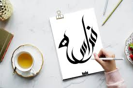
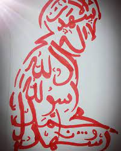
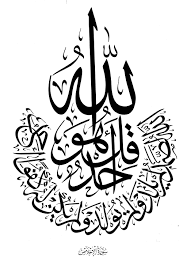
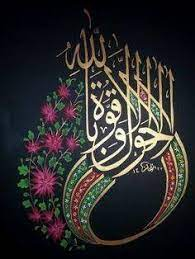
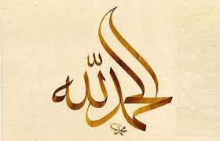
Arabic calligraphy is the type of art which is given so much of importance. This calligraphy is based on Arabic language. Calligraphy in Arabic is called ‘khatt’ derived by the word line or design.
Arabic calligraphy is used widely. Almost every Islamic religion script exists in Arabic calligraphy. All the monuments and mosques also consists this type of art. It is considered one of the most beautiful language and calligraphic form.
Arabic calligraphy is the artistic practice of handwriting and calligraphy based on the Arabic alphabet. It is known in Arabic as khatt (Arabic: ???), derived from the word 'line', 'design', or 'construction'.Kufic is the oldest form of the Arabic script.
From an artistic point of view, Arabic calligraphy has been known and appreciated for its diversity and great potential for development. In fact, it has been linked in the Arabic civilization to various fields such as religion, art, architecture, education and craftsmanship, which in return have played an important role in its advancement.
Although most Islamic calligraphy is in Arabic and most Arabic calligraphy is Islamic, the two are not identical. Coptic or other Christian manuscripts in Arabic, for example, have made use of calligraphy. Likewise, there is Islamic calligraphy in Persian or the historic Ottoman language.
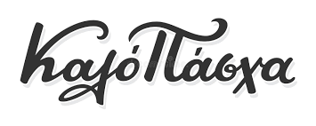
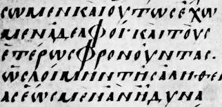
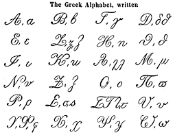
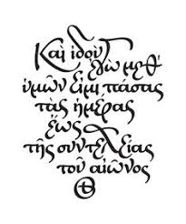
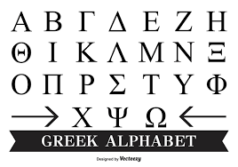
GREEK calligraphy, the art of beautiful handwriting. The term may derive from the Greek words for “beauty” (kallos) and “to write” (graphein).
The oldest Greek writing, syllabic signs scratched with a stylus on sun-dried clay, is that of the Linear B tablets found in Knossos, Pylos, and Mycenae (1400–1200 bce). Alphabetic writing, in use before the end of the 8th century bce, is first found in a scratched inscription on a jug awarded as a prize in Athens.
Greek writing has been used to write the Greek language since the late ninth or early eighth century BC. It is derived from the earlier Phoenician alphabet, and was the first alphabetic script in history to have distinct letters for vowels as well as consonants.
Greek alphabet could be divided into two principal branches: the Ionic (eastern) and the Chalcidian (western). Differences between the two branches were minor.
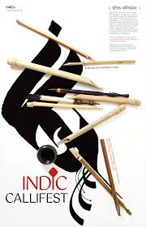
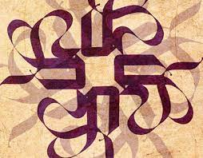
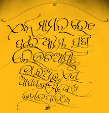
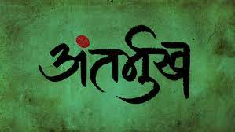
Indian calligraphy took off starting around 500 AD when Indian traders, colonists, military adventurers, Buddhist monks and missionaries brought the Indic script to Central Asia from South East Asia. Different concepts and ideas were being created throughout the late 400s to late 1400s, in a 1000-year span.
The Gilgit scripts are the earliest notable form of calligraphy in India that date back to the 5th and 6th centuries. The earliest painted covers of manuscripts were created between the 7th and 9th centuries, and the earliest illustrated manuscript in South Asia was not formed until around the 10th century
There was a bigger goal to this style of language than just to communicate with one another. There was no one true form of communication before this was created, and calligraphy helped to guide community members to connect in more than one aspect of life, that was not just language.
Indic is the Indian tradition of calligraphy. The art form has served multiple purposes since its inception in the second century BCE, including the duplication of religious texts and as a form of basic communication.

The history of the Hebrew alphabet is not to be confused with the history of the Paleo-Hebrew alphabet, so called not because it is ancestral to the Hebrew alphabet but because it was used to write the earliest form of the Hebrew language.
The Canaanite “Hebrew” alphabet is a development from the Aramaic alphabet taking place during the Persian, Hellenistic and Roman periods (c. 500 BCE – 50 CE). It replaced the Paleo-Hebrew alphabet which was used in the earliest epigraphic records of the Hebrew language.
Modern Hebrew, especially in informal use in Israel, is handwritten with the Ashkenazi cursive script that had developed in Central Europe by the 13th century.
The descendents of the Canaanites, the Phoenicians, are generally credited with inventing the 22-letter alphabet letters, each representing a sound, at about 1300 BCE
Hebrew also dates back thousands of years. A Canaanite language that forms part of the Northwest Semitic language family, Hebrew was spoken as early as around 1200 BCE. As well as being one of the world's oldest languages, Hebrew also manages to be one of the world's youngest languages!